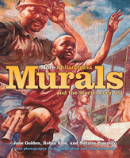

<body bgcolor="#FFFFFF" text="#000000" link="#0000FF" vlink="#CC0000" alink="#CC0000"><center><hr width="350" size="1" align="center" noshade>The sequel to the bestselling story of the largest public art program in the nation<hr width="350" size="1" align="center" noshade><p><a href="https://cdcshoppingcart.uchicago.edu/Cart/ChicagoBook.aspx?ISBN=9781592135271&&PRESS=temple" target="_top">Buy this book!</a> | <a href="https://cdcshoppingcart.uchicago.edu/Cart/Cart.aspx?PRESS=temple" target="_top">View Cart</a> | <a href="https://cdcshoppingcart.uchicago.edu/Cart/Cart.aspx?PRESS=temple" target="_top">Check Out</a></p><p></p></center><!--none//--><h1>More Philadelphia Murals and the Stories They Tell</h1>
<H2><!-- Photographs by David Graham and Jack Ramsdale --></H2>
<h3>Jane Golden, Robin Rice and Natalie Pompilio, photographs by David Graham and Jack Ramsdale</h3>
<P>cloth 1-59213-527-7 $39.50, Aug 06, <FONT COLOR=#990033>Available</FONT>
<br>Electronic Book 1-59213-587-0 $ <FONT COLOR=#990033>Available</FONT>
<BR> 160 pp
9x11
114&nbsp;color&nbsp;illustrations
</P><h3 align="center"><P><font color="#996633">Second prize winner of UCF Jane Jacobs Publication Award,
2006</font></P>
</H3>
<BLOCKQUOTE><I>"</i>More Philadelphia Murals and the Stories They Tell<i> is as inspirational as it is beautiful, but is ultimately important in recounting the lives of the artists and residents whose lives are transformed by the simple stroke of a paintbrush."</i>
<br>&#151;<b><i>The Philadelphia Tribune</i></b><i></I></BLOCKQUOTE>
<p>More than twenty years ago, a New Jersey artist started a project for the Philadelphia Anti-Graffiti Network that encouraged young people to paint murals on a few buildings around the city. Jane Golden could not have known that the Mural Arts Program (MAP) would become the nation's largest public art program and a model for programs throughout the country. With more than 2600 murals throughout Philadelphia, the program has brightened the lives of countless residents and tourists while providing a creative outlet for an astounding array of artists. MAP now works with more than 3000 students around the city, engaging them in a curriculum that teaches not only artistic skills but civic engagement and personal responsibility.
<p><i>More Philadelphia Murals and the Stories They Tell</i>, a sequel to the bestselling <i><a href="1601_reg.html" target="_top">Philadelphia Murals and the Stories They Tell</a></i>, shares with the earlier work its beautiful color photography, along with profiles of the artists. Featured here is the remarkable story of an unlikely artistic collaboration&#151;between boys who live in a residential facility, a community in the Kensington section of Philadelphia, and men who are incarcerated in a maximum-security state correctional facility. The 1/8 of a mile long mural they created, about balanced and restorative justice, was intended to help the young men give something back to a community they had harmed and help the community wrestle with issues around crime and violence. In the process of creating the mural, it became a life-changing experience for all involved. By recounting this story and the many others behind the works of art, <i>More Philadelphia Murals and the Stories They Tell</i> is as inspirational as it is beautiful.
<BR>&nbsp;<h2>Reviews</h2>
<p><i>"As with the original, 2002 </i>Philadelphia Murals<i> book, this sequel provides insights into how the murals are created and their inspirations. Not only will </i>More Philadelphia Murals<i> elegantly adorn your coffee table, it could provide the springboard to energize a young artist."</i>
<br>&#151;<b><i>Metrokids</i></b>
<BR>&nbsp;<H2>About the Author(s)</H2>
<table><tr><td valign="top"><img src="/tempress/authors/1863_au1.gif" height="90" width="75"></td><td width="100%" valign="middle"><p><b>Jane Golden</b> is Executive Director of the Philadelphia Mural Arts Program, the largest program of its kind in the United States. She is the co-author of <i><a href="1601_reg.html" target="_top">Philadelphia Murals and the Stories They Tell</a></i> (Temple).</P></td></tr></table><table><tr><td valign="top"><img src="/tempress/authors/1863_au2.gif" height="90" width="75"></td><td width="100%" valign="middle"><p><b>Robin Rice</b> is an art writer and Associate Professor at the University of the Arts. She is the co-author of <i><a href="1601_reg.html" target="_top">Philadelphia Murals and the Stories They Tell</a></i>.</P></td></tr></table><table><tr><td valign="top"><img src="/tempress/authors/1863_au3.gif" height="90" width="75"></td><td width="100%" valign="middle"><p><b>Natalie Pompilio</b> is a staff writer for <i>The Philadelphia Inquirer</i>.</P></td></tr></table><table><tr><td valign="top"><img src="/tempress/authors/1863_au4.gif" height="90" width="75"></td><td width="100%" valign="middle"><p><b>David Graham</b> is a photographer and Associate Professor at the University of the Arts. He is a photographer for <i><a href="1601_reg.html" target="_top">Philadelphia Murals and the Stories They Tell</a></i>.</P></td></tr></table><table><tr><td valign="top"><img src="/tempress/authors/1863_au5.gif" height="90" width="75"></td><td width="100%" valign="middle"><p><b>Jack Ramsdale</b> has been involved with the Mural Arts Program since 1998.
He is a photographer for <i><a href="1601_reg.html" target="_top">Philadelphia Murals and the Stories They Tell</a></i>.</P></td></tr></table>
<BR><H2>Subject Categories</H2>
<p><A HREF="/tempress/philly.html" TARGET="_top">Philadelphia Region</a>
<BR><A HREF="/tempress/general.html" TARGET="_top">General Interest</a>
<BR><A HREF="/tempress/art.html" TARGET="_top">Art and Photography</a>
</p>
<p align="center"><a href="https://cdcshoppingcart.uchicago.edu/Cart/ChicagoBook.aspx?ISBN=9781592135271&&PRESS=temple" target="_top">Buy this book!</a> | <a href="https://cdcshoppingcart.uchicago.edu/Cart/Cart.aspx?PRESS=temple" target="_top">View Cart</a> | <a href="https://cdcshoppingcart.uchicago.edu/Cart/Cart.aspx?PRESS=temple" target="_top">Check Out</a></p><p><font face="Arial" size="1"><a href="copyright.html" onMouseOver="window.status='Web Copyright Policy';return true;" onMouseOut="window.status=''" title="Web Copyright Policy">&copy;</a> 2015 <a href="http://www.temple.edu" target="new" onMouseOver="window.status='Link to Temple University home page';return true;" onMouseOut="window.status=''" title="Link to Temple University home page">Temple University</a>. All Rights Reserved. http://www.temple.edu/tempress/titles/1863_reg.html</font></p>